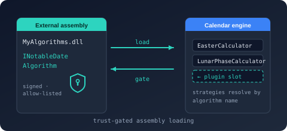

Bodu.Globalization.Calendar.Plugins Namespace
- Package

Bodu.Globalization.Calendar.Plugins
Purpose
Bodu.Globalization.Calendar.Plugins loads external assemblies that contribute custom date-calculation algorithms to Bodu.Globalization.Calendar, behind an explicit, deny-by-default trust gate.
A plugin assembly advertises itself with an assembly-level NotableDatePluginAttribute. The host evaluates the assembly against an IPluginTrustPolicy before activating any plugin type; a rejected assembly is never instantiated. Trusted plugins surface their INotableDateAlgorithm implementations, which are then registered into a NotableDateAlgorithmRegistry for use by <Algorithm key="…"> rules.
Static documentation
- Calendar plugin trust - the trust-gate contract: what each policy guarantees, entry-point strength, registration collision policy, and unloading.
- Building and extending the service - the plugin model, trust policies, and end-to-end loading.
Key types
Plugin contracts
- INotableDatePlugin - the base contract (
Name,Version). - INotableDateAlgorithmPlugin -
GetAlgorithms()returns the(key, INotableDateAlgorithm)pairs the plugin contributes. - NotableDatePluginAttribute - the assembly-level attribute naming the plugin type, e.g.
[assembly: NotableDatePlugin(typeof(MyPlugin))].
Loader
- NotableDatePluginLoader -
LoadFrom(Assembly, IPluginTrustPolicy)andLoadFrom(string assemblyPath, IPluginTrustPolicy)(the path overload loads into a dedicatedAssemblyLoadContext);RegisterAlgorithms(plugin, registry)registers the plugin's algorithms and returns the count. Trust is evaluated before activation.
Trust policies
- IPluginTrustPolicy -
Evaluate(PluginTrustContext)returns a PluginTrustResult; the inputs are carried by PluginTrustContext (assembly name, path, file hash, public-key token). - Bundled policies: AllowAllPluginTrustPolicy (development / tests only), StrongNamePluginTrustPolicy, FileHashPluginTrustPolicy, CompositePluginTrustPolicy (AND / short-circuit), and DelegatingPluginTrustPolicy (decide with a delegate).
Exceptions
- NotableDatePluginException (base), PluginNotTrustedException, PluginMissingAttributeException, PluginActivationException.
Minimal sample
using Bodu.Globalization.Calendar.Algorithms;
using Bodu.Globalization.Calendar.Plugins;
// Pin the exact reviewed bytes: the file-hash policy is the strongest bundled guarantee.
IPluginTrustPolicy trust = new FileHashPluginTrustPolicy(new Dictionary<string, byte[]>
{
["Contoso.Holidays"] = reviewedSha256Digest,
});
// The path overload hashes the same bytes it loads (no swap window) and isolates the plugin
// in a dedicated collectible AssemblyLoadContext; throws if untrusted.
INotableDatePlugin plugin = NotableDatePluginLoader.LoadFrom("plugins/Contoso.Holidays.dll", trust);
var registry = new NotableDateAlgorithmRegistry();
int registered = NotableDatePluginLoader.RegisterAlgorithms(plugin, registry);
// registry can now back <Algorithm key="…"> rules in a loaded resource.
Warning
The trust gate is an admission check, not a sandbox - an admitted plugin runs with the full trust of the process. AllowAllPluginTrustPolicy is for development and tests only, and StrongNamePluginTrustPolicy validates a copyable manifest token rather than a verified signature - for untrusted input, always combine it with the file-hash policy. The LoadFrom(Assembly, …) overload evaluates trust after the assembly is already loaded and must not be used for untrusted input; prefer the path overloads, and LoadFromFile when the plugin should be unloadable. See the plugin trust guide.
Classes
- AllowAllPluginTrustPolicy
A trust policy that trusts every candidate assembly.
- CompositePluginTrustPolicy
A trust policy that trusts a candidate only when every composed policy trusts it; the first rejection short-circuits and its reason is surfaced. An empty policy set fails closed - it rejects every candidate rather than vacuously trusting it - so a misconfigured composite cannot silently disable the trust gate.
- DelegatingPluginTrustPolicy
A trust policy that delegates the decision to a caller-supplied function, suitable for runtime state, configuration, or remote attestation.
- FileHashPluginTrustPolicy
A trust policy that admits plugin assemblies whose SHA-256 file hash matches a digest pinned by the consumer under the candidate's assembly name.
- NotableDatePluginAttribute
Declares, at assembly level, the entry-point type the plugin loader activates to obtain the assembly's INotableDatePlugin.
- NotableDatePluginException
The base exception for failures encountered while loading a notable-date plugin.
- NotableDatePluginHandle
Owns an activated plugin together with its dedicated AssemblyLoadContext, so the plugin's assemblies can be unloaded when the handle is disposed.
- NotableDatePluginLoader
Loads notable-date plugins from assemblies, gating activation behind an IPluginTrustPolicy and registering the contributed algorithms with a NotableDateAlgorithmRegistry.
- PluginActivationException
The exception thrown when the declared plugin type cannot be activated or does not implement INotableDatePlugin.
- PluginAlgorithmRegistrationOptions
Controls how RegisterAlgorithms(INotableDatePlugin, NotableDateAlgorithmRegistry, PluginAlgorithmRegistrationOptions, ILogger?) treats a plugin's contributed algorithm keys.
- PluginMissingAttributeException
The exception thrown when a candidate assembly does not declare a NotableDatePluginAttribute.
- PluginNotTrustedException
The exception thrown when a trust policy rejects a candidate plugin assembly.
- PluginTrustContext
Carries the metadata a trust policy evaluates before a plugin assembly's code is activated.
- PluginTrustResult
The outcome of a trust-policy evaluation.
- StrongNamePluginTrustPolicy
A trust policy that admits plugin assemblies whose strong-name public-key token appears in a consumer-supplied allowlist.
Interfaces
- INotableDateAlgorithmPlugin
A plugin that contributes one or more custom INotableDateAlgorithm implementations keyed by algorithm key, which a host registers with a NotableDateAlgorithmRegistry.
- INotableDatePlugin
The base contract implemented by every notable-date plugin, exposing the identity a host uses for diagnostics, logging, and version reporting.
- IPluginTrustPolicy
Decides whether a candidate plugin assembly is trusted, evaluated before any of the plugin's code is activated.